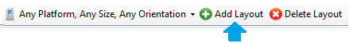
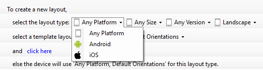
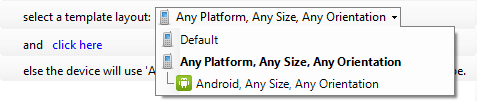
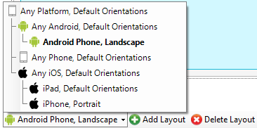
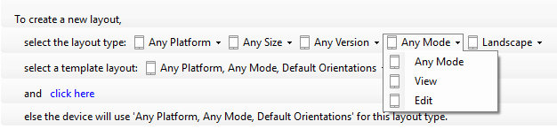

In different mobile devices and even in the same device I may want to use different designs. For example:
Multiple LayoutsGeneXus allows to have more than one design for the panel layouts, making them different for each platform, size, version and orientation combination. When creating an object, a default layout is created to be used for Any Platform, Any Size, Any Version and Any Orientation.  Using the "Add Layout" button, new designs can be created.  In this step, it is needed to choose which type of layout is being created, selecting the platform, size, version and orientation. Available combinations are :
 Selecting the "click here" option, the new layout design is created with the selected type and based on the selected template. Then, when working on the panel layouts design, each created layout can be selected in the bottom left corner of the screen to be edited.  Layouts by Mode In the layouts of Details of Work With for Smart Devices objects, in addition to platform, size and orientation, we can define different layouts designs depending on the Mode (View and Edit)  See Also
|
| Backlinks | |
| HowTo: Include App Thinning on iOS applications | Selection Type property |